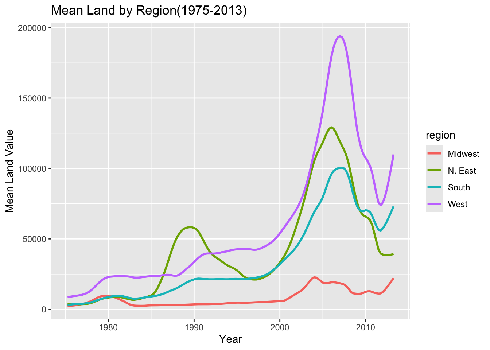

Assignment 5: Data transformation and visualization - Part 2
Instructions: Please read through this before you begin
This assignment is due by 10pm on Thursday 10/02/2025. Please upload it using your personal GitHub repository for this class.
Please name your Quarto file assignment_5.qmd and the rendered markdown file assignment_5.md.
For this assignment, please reproduce this markdown file using R markdown. This includes the followings:
Reproduce this markdown template, except for this list of instructions which you don’t have to include. Pay attention to all the formatting in this file, including bullet points, bolded characters, inserted code chunks, headings, text colors, blank lines, etc.
Have all your code embedded within the R markdown file, and show BOTH your code and plots in the knitted markdown file.
When a verbal response is needed, answer by editing the part in the R markdown template where it says “Write your response here”.
Use R Markdown functionalities to hide messages and warnings when needed. (Suggestion: messages and warnings can often be informative and important, so please examine them carefully and only turn them off when you finish the exercise).
Please note that Questions 2.8-2.11 are optional.
First, load all the required packages with the following code. Install them if they are not installed yet.
This excercise uses a dataset that describes the trends in land value (Land.Value), among other variables, in different states in the US 1975-2013. The states are grouped into four different regions, under the variable region. This dataset was obtained from the Data Science Services of Harvard University.
Rows: 7803 Columns: 11
── Column specification ────────────────────────────────────────────────────────
Delimiter: ","
chr (2): State, region
dbl (9): Date, Home.Value, Structure.Cost, Land.Value, Land.Share..Pct., Hom...
ℹ Use `spec()` to retrieve the full column specification for this data.
ℹ Specify the column types or set `show_col_types = FALSE` to quiet this message.
1.1 Washington DC was not assigned to a region in this dataset. According to the United States Census Bureau, however, DC is part of the South region. Here:
Change the region of DC to “South” (Hint: there are multiple ways to do this, but mutate() and ifelse() might be helpful)
# A tibble: 7,803 × 4
region State Land.Value Date
<chr> <chr> <dbl> <dbl>
1 West AK 64352 2010.
2 West AK 65259 2010.
3 West AK 62029 2010.
4 West AK 63207 2010
5 West AK 79190 2008
6 West AK 76256 2008.
7 West AK 72906 2008.
8 West AK 69460 2009.
9 West AK 66299 2009
10 West AK 63971 2009.
# ℹ 7,793 more rows
Create a new tibble or regular dataframe consisting of this new updated region variable along with the original variables State, Date and Land.Value (and no others)
Pull out the records from DC in this new data frame. How many records are there from DC? Show the first 6 lines.
recordsDC <- housingUpdated |>filter(State=="DC")head(recordsDC) ## first six.. unsure if "head" is exactly 6 or if it is just chance
# A tibble: 6 × 4
region State Land.Value Date
<chr> <chr> <dbl> <dbl>
1 South DC 290522 2003
2 South DC 305673 2003.
3 South DC 323078 2004.
4 South DC 342010 2004.
5 South DC 361999 2004
6 South DC 382792 2004.
Hregion
State
Land.Value
Date
South
DC
290522
2003.00
South
DC
305673
2003.25
South
DC
323078
2003.50
South
DC
342010
2003.75
South
DC
361999
2004.00
South
DC
382792
2004.25
Answer: Answer is in above code chunks (i think)
1.2 Generate a tibble/dataframe that summarizes the mean land value of each region at each time point and show its first 6 lines.
1.3 Using the tibble/dataframe from 1.2, plot the trend in mean land value of each region through time.
housingUpdated <- housing %>%mutate(region =ifelse(State =="DC", "South", region)) %>%select(region, State, Land.Value, Date)## okay I see why naming conventions are REALLY important now. MeanLandValueByRevion <- housingUpdated |>group_by(region,Date) |>summarize(MeanLandValue =mean(Land.Value, na.rm=TRUE)) |>ungroup()
`summarise()` has grouped output by 'region'. You can override using the
`.groups` argument.
ggplot(MeanLandValueByRevion,aes(x=Date,y=MeanLandValue,color=region))+geom_line(size=1) +labs(title="Mean Land by Region(1975-2013)",x="Year",y="Mean Land Value")
Warning: Using `size` aesthetic for lines was deprecated in ggplot2 3.4.0.
ℹ Please use `linewidth` instead.

Exercise 2. Life expectancy and GDP per capita 1952-2007
This exercise uses the gapminder dataset from the gapminder package. It describes the life expectancy (lifeExp), GDP per capita (gdpPercap), and population (pop) of 142 countries from 1952 to 2007. These countries can be grouped into 5 continents. As a reminder, reproduce the following plots exactly as shown.
gapminder %>%head() %>%kable()
country
continent
year
lifeExp
pop
gdpPercap
Afghanistan
Asia
1952
28.801
8425333
779.4453
Afghanistan
Asia
1957
30.332
9240934
820.8530
Afghanistan
Asia
1962
31.997
10267083
853.1007
Afghanistan
Asia
1967
34.020
11537966
836.1971
Afghanistan
Asia
1972
36.088
13079460
739.9811
Afghanistan
Asia
1977
38.438
14880372
786.1134
2.1 Use a scatterplot to explore the relationship between per capita GDP (gdpPercap) and life expectancy (lifeExp) in the year 2007.
2.2 Add a smoothing line to the previous plot.
2.3 Exclude Oceania from the previous plot, show each continent in a different color, and fit a separate smoothing line to each continent to identify differences in this relationship between continents. Turn off the confidence intervals.
Note: only two Oceanian countries are included in this dataset, and geom_smooth() does not work with two data points, which is why they are excluded.
2.4 Use faceting to solve the same problem. Include the confidence intervals in this plot.
2.5 Explore the trend in life expectancy through time in each continent. Color by continent.
2.6 From the previous plot, we see some abnormal trends in Asia and Africa, where the the life expectancy in some countries sharply dropped at certain time periods. Here, we look into what happened in Asia in more detail. First, create a new dataset by filtering only the Asian countries. Show the first 6 lines of this filtered dataset.
country
continent
year
lifeExp
pop
gdpPercap
Afghanistan
Asia
1952
28.801
8425333
779.4453
Afghanistan
Asia
1957
30.332
9240934
820.8530
Afghanistan
Asia
1962
31.997
10267083
853.1007
Afghanistan
Asia
1967
34.020
11537966
836.1971
Afghanistan
Asia
1972
36.088
13079460
739.9811
Afghanistan
Asia
1977
38.438
14880372
786.1134
2.7 Using the filtered dataset, identify the countries that had abnormal trends in life expectancy by plotting, and discuss historical events possibly explaining these trends. (Hint: facet by country)
Answer: Write your response here.
THE LAST FOUR QUESTIONS ARE OPTIONAL
2.8 Explore the trend in per capita GDP through time on each continent (OPTIONAL)
2.9 There is one Asian country that had a very sharp decline in per capita GDP. With the previously filtered dataset, use a plot to identify this country and speculate on the historical event underlying this pattern (OPTIONAL)
Answer: Write your response here.
2.10 Starting from the full gapminder dataset, explore the relationship between per capita GDP (gdpPercap) and life expectancy (lifeExp) in 1952 and in 2007 using a scatter plot as shown below. Color the the points that represent different countries based on the continent that they are in, and make the size of the points proportional to the population size (OPTIONAL)
2.11 Polish the previous plot to make it more informative and nicer looking. Below is an example of what you can do, but you don’t have to completely replicate this (OPTIONAL)